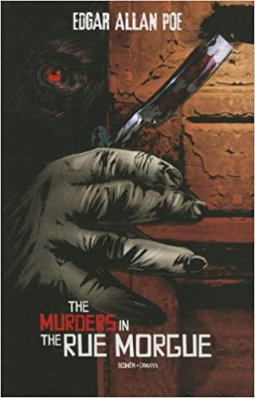
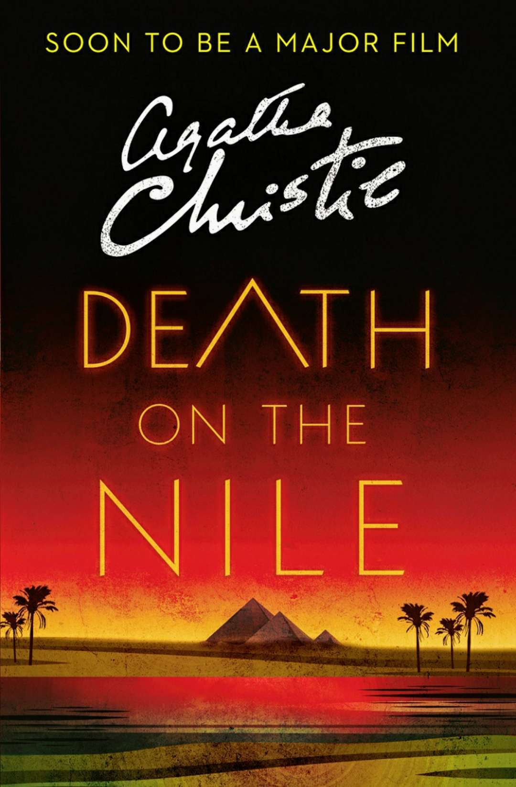

The Da Vinci Code is a 2003 mystery thriller novel by Dan Brown. It is Brown's second novel to include the character Robert Langdon: the first was his 2000 novel Angels & Demons.
The Devil in the White City: Murder, Magic, and Madness at the Fair That Changed America is a 2003 historical non-fiction book by Erik Larson presented in a novelistic style. The book is based on real characters and events.
"The Murders in the Rue Morgue" is a short story by Edgar Allan Poe published in Graham's Magazine in 1841. It has been described as the first modern detective story
Death on the Nile is a work of detective fiction by British writer Agatha Christie, first published in the UK by the Collins Crime Club on 1 November 1937 and in the US by Dodd, Mead and Company the following year.
In the grip of the worst drought in a century, the farming community of Kiewarra is facing life and death choices daily when three members of a local family are found brutally slain. A small town hides big secrets in this atmospheric, page-turning debut mystery by award-winning author Jane Harper.